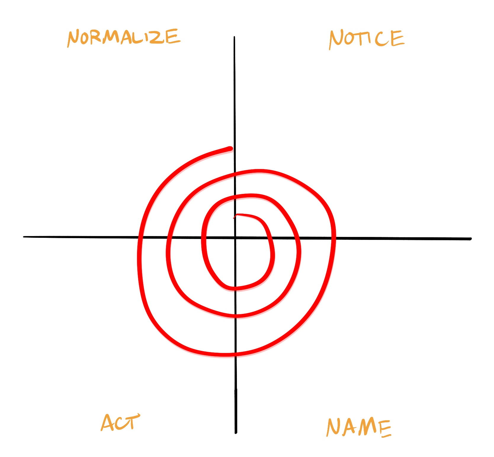

Assessment Reflections
16 Personalities: ENFP-A
Extraverted, Intuitive, Feeling, Prospecting, and Assertive
Quick convos fuel me. I build culture by bringing people in and keeping momentum high.
I track how choices land emotionally, making sure people feel seen even when the work is intense.
Prospecting & accommodation mean I say yes a lot. My work is adding structure without losing spark.
E - Extraverted
My extraversion manifests in how I get energy from people. Whenever I'm tired or down, a quick conversation, even with someone random, gives me a boost. I love group projects, social events, any situation where I can be part of a social dynamic. One concrete example of this is being elected social chair of my fraternity in my sophomore year for knowing the most people on campus, hardly able to walk between classes without a lot of hello’s.
It can create challenges when I talk too early or too often. Sometimes I jump in with my idea before others have time to think. That can unintentionally steer the group in my direction before we have explored alternatives. I also notice that long stretches of solo work feel draining, which matters in engineering where deep focus is important.
N - Intuitive
The Intuitive side of my personality shows up in how I think about ideas and patterns. I like imagining how things could be different. I enjoy brainstorming, big picture thinking, and connecting concepts across classes, leadership roles, and personal experiences. On teams, I gravitate toward vision, long term planning, and creative problem solving instead of step by step execution. A concrete example of this is how I am currently trying to create a webapp for my fraternity of an executive dashboard to simplify, unify, and harmonize each member of the executive board.
The downside is that I can skip details too quickly. I sometimes assume everyone sees the same pattern I do. In technical work, that can mean I move ahead based on intuition before fully checking assumptions or constraints. I am learning to slow down and pair my intuitive side with structure and data.
F - Feeling
The Feeling letter fits how I make decisions. I care deeply about how choices affect people. In leadership roles, I think about morale, inclusion, and how decisions land emotionally. I often notice who seems left out or discouraged and then try to fix that through conversations or small gestures. A concrete example of this comes from the current presidential race in my fraternity. As vice president I am avoiding picking a side, but rather encouraging and arming both candidates to be as successful as possible. I care about both of them and want both to shine.
The challenge is that as a people pleaser, I can sometimes avoid hard conversations in order to not displease anyone. I would rather remain neutral as possible or left things to be assumed and unsaid rather than come into conflict where I will be voicing negative opinions without much construction.
P - Prospecting
Prospecting manifests in my love for adventure and spontaneity. If I am able to do something new or ridiculous I'm always going to choose that. Even if something is harder I'm down for it if it makes a good story. I enjoy last minute ideas, creative changes, and adapting plans based on new information, creating a dynamic team. I adjust quickly to disruptions and keep things moving. A concrete example of this comes from a recent trip to Boston I took. Instead of ubering back to the hotel at 2 am, I instead suggested we rent bikes and take a 30 minute tear through the city to continue the good vibes of the night.
The downside is that I can overcommit and underestimate how long things take. I sometimes say yes to too many projects because they all sound interesting. Then I have to scramble late in the process. I am learning to build more structure around my schedule and communicate more clearly about what I can realistically do.
A - Assertive
My assertiveness manifests in my confidence and optimism. I have two quotes that I often come back to. The first inspires confidence and more so persistence in the face of adversity. "Unwavering faith, ultimate belief, depending on the Lord, that's all we got" said by Jameis Winston, quarterback of the Cleveland Browns. I'm no NFL fan, but that quote, and the passion and true faith that Jameis said it with impacted me when I saw a highlight of him on TikTok. What seals this for me is a quote I recently heard at a job fair. "Either you believe you can or you cannot. Either way you are correct," which was said by Henry Ford.
This quote inspires my optimistic outlook in the face of everything no matter what. It is easy to walk the path of the cynic, of the nonbeliever. And they may find success. But to look something in the face and believe that it will go well, that a sunrise is at the end of every journey so long as you believe there is and you keep going, will in itself keep you going, will on its own create a self fulfilling prophecy as you reach further and push harder to achieve the dream only you can see. I try to live by these two quotes as much as possible, and try to inspire others to do the same.
I recover from mistakes very fast, staying calm in stressful events, on tight deadlines, or huge events. I am careful to never let this slip into overconfidence, though it has at times. I am always checking myself to make sure to be identifying the real risks in any situation, and how to best mitigate or recover from them.
My ENFP-A profile shows up clearly in my leadership and team experiences. In student organizations, I often step into roles where the team needs energy, ideas, and connection. I like building culture, welcoming new members, and turning big ideas into plans. My extraverted and intuitive sides help me see possibilities and get people excited. My feeling and assertive sides help me support others while still moving toward a result.
At the same time, these traits create predictable challenges. I can talk too much, drift away from details, overextend myself, and protect relationships at the cost of directness. Knowing this helps me design leadership habits that support my strengths and reduce the downsides.

Conflict Management Style Reflection
Collaborating, Compromising, Accommodating, Competing, Avoiding
My conflict management assessment ranked my styles in this order: Collaborating, Compromising, Accommodating, Competing, Avoiding. I lead like the Owl and Fox, leaning on collaboration and compromise before shifting into other modes.
Collaborating
I naturally look for solutions that work for multiple people. I ask questions, summarize positions, and create alignment. When relationships matter more than speed, this style shines.
Compromising
When collaboration feels too slow, I pivot to realistic middle ground. Splitting responsibilities or rotating roles keeps momentum and leaves everyone with a sense of shared gain.
Accommodating
With close friends, I often choose peace over preference. It is generous, but I have to watch for quiet resentment if I go too long without naming what I need.
Competing
This mode appears when the stakes feel high or I am responsible for a result. I can speak strongly and drive a decision, which helps when a team needs clarity fast.
Avoiding
I rarely disappear from conflict, though I still delay hard conversations when I feel overwhelmed. My low score does not mean I never avoid — just that other styles come first.
References
- “Assertive Campaigner.” 16Personalities, www.16personalities.com/profiles/enfp-a/m/xpbmj4doa. Accessed 18 Nov. 2025.
- Adkins, R. “Conflict Management Styles Assessment,” Elemental Truths blog, adapted PDF provided in class.
My Leadership Theory
Why this theory exists
In many of my teams, the same tension always arises. There is an acknowledgement of the need for honesty, shared leadership, and psychological safety, yet in practice many small moments pass by where no one speaks up. Feedback gets delayed. Concerns stay quiet. People worry about being "too much," "too negative," or "too direct." It is not that we lack big leadership slogans. We lack small, repeatable behaviors that feel doable in busy, real life.
My own personality as an ENFP-A plays into this. I bring energy, optimism, and connection, but I also sometimes avoid hard feedback or uncomfortable truths. I realized that my best moments as a leader often came from tiny acts of courage. I asked one more question. I admitted I was confused. I told someone, kindly, that something was not working. Those small actions shifted the whole dynamic.
Core Concept: Micro-Bravery Leadership
Micro-Bravery Leadership says that consistent, small acts of courage from both leaders and team members create psychological safety, learning, and trust more reliably than rare, dramatic moments of heroism.
It focuses on tiny, repeatable behaviors that anyone on a team can practice, not just people with formal titles.
Micro-bravery can be:
- Asking a "stupid" question out loud
- Admitting a mistake early instead of hiding it
- Giving honest feedback within 24–48 hours instead of sitting on it
- Naming tension in the room with curiosity instead of blame
- Inviting the quietest person to speak before stating your own view
Visual Model: The Micro-Bravery Loop
Notice
Team members pay attention to moments that trigger fear, discomfort, confusion, or tension. They notice when someone seems quiet, when there is a gap in understanding, or when an issue keeps getting pushed aside.
Name
Someone names what they notice in simple, neutral language. For example, "I am not sure we all understand this timeline," or "I feel some tension about this decision and I'm not sure why." The act of naming is the first micro-brave step.
Act
The team takes one small action to address what was named. This could be asking a question, clarifying expectations, running a quick check in, or offering specific feedback. The action does not need to be perfect. It just needs to move the situation forward honestly.
Normalize
The leader responds in a way that rewards micro-bravery instead of punishing it. They thank people for speaking up, avoid shaming, and focus on learning. Over time, this makes micro-brave behavior feel normal instead of risky. Teammates also help normalize by supporting each other when someone takes a risk.
Then the cycle repeats. Each loop builds more trust and makes the next act of micro-bravery easier.
Research and Evidence
Research shows that psychological safety is critical for team learning and performance, and that leadership behaviors shape that climate. Studies on team effectiveness, including Google's Project Aristotle, point to psychological safety as a key factor in high performing teams, more than individual star talent. I wanted a leadership theory that focuses on how everyday, small behaviors from both leaders and followers can build that kind of environment.
Recent work on growth mindset and leadership suggests that leaders who frame challenges as learning opportunities and treat mistakes as data create more resilient and adaptive teams. Research also links everyday leadership behaviors to outcomes like engagement, innovation, and team health, which supports a focus on small daily actions over rare big moments.
Micro-Bravery Leadership builds on this evidence by zooming in on the specific small behaviors that create psychological safety and learning. It translates big ideas like "be supportive" and "promote learning" into concrete steps any team member can practice.
Connection to existing theories
My theory connects to, but differs from, several existing leadership theories:
Transformational leadership focuses on inspiring followers through vision, motivation, and intellectual stimulation. Micro-Bravery Leadership uses some of that inspiration, but focuses more on everyday risk taking and honest communication at all levels.
Servant leadership emphasizes serving others, humility, and putting followers' needs first. My theory borrows the focus on others, but centers specifically on how serving others includes making space for uncomfortable truths and direct feedback.
Psychological safety frameworks explain why safety matters and describe stages or conditions for it. Micro-Bravery Leadership offers a behavior level tool. It says "here are the small things you do in a meeting tomorrow that build that safety."
The original contribution in Micro-Bravery Leadership is the emphasis on micro-actions as the main unit of leadership, not personality traits or rare heroic decisions. It treats leadership as something distributed and practiced in tiny moments, not reserved for people with titles.
Concrete Steps to Apply Micro-Bravery Leadership
A leader or a team member can apply Micro-Bravery through simple repeatable behaviors:
Before Meetings
- Decide one small risk you will take, such as asking a clarifying question or giving credit to someone quieter
- Plan one open question to invite honest input, like "what are we worried about that we have not said out loud yet?"
During Meetings
- Use Notice, Name, Act, Normalize loop in real time
- Invite quieter voices first before sharing your own solution
- When someone speaks up with a concern, thank them and build on it instead of shutting it down
After Meetings
- Follow up within 24 to 48 hours with one piece of specific feedback or appreciation
- Reflect briefly: "when did I see micro-bravery from myself or others today?"
When This Theory Works and Limitations
Micro-Bravery Leadership works best in teams that need creative problem solving, collaboration, and learning over time. It fits student organizations, project teams, early stage companies, and cross functional groups. It is especially helpful when there are power differences or when people feel nervous about speaking up.
The theory has limits. In crisis situations where immediate, decisive action is required, there may be less time for shared micro-bravery. Clear command style leadership can be necessary. In cultures or organizations with very rigid hierarchies and low tolerance for mistakes, micro-bravery may feel too risky at first. People may need structural protection before behavior can shift. It also depends on leaders who are willing to model and reward honesty. Without that, micro-brave acts can be punished instead of normalized.
Finally, micro-bravery does not replace competence or strategy. A team still needs technical skill and clear direction. This theory focuses on how people interact while they pursue those goals.
References
- Edmondson, A. (1999). Psychological Safety and Learning Behavior in Work Teams. Administrative Science Quarterly, 44(2), 350-383. https://doi.org/10.2307/2666999 (Original work published 1999)
- Koeslag-Kreunen, M., Van den Bossche, P., Hoven, M., Van der Klink, M., & Gijselaers, W. (2018). When Leadership Powers Team Learning: A Meta-Analysis. Small Group Research, 49(4), 475-513. https://doi.org/10.1177/1046496418764824 (Original work published 2018)
- “Google Re:Work - Guides: Understand Team Effectiveness.” Google, Google, rework.withgoogle.com/intl/en/guides/understanding-team-effectiveness. Accessed 18 Nov. 2025.
- Growth Mindset vs. Fixed Mindset: What’s the Difference?, online.hbs.edu/blog/post/growth-mindset-vs-fixed-mindset. Accessed 18 Nov. 2025.
Growth
The Behavior I Need to Change
If I am being honest with myself, the behavior I need to change is this: I will stop overextending myself to the point where the people and practices that matter most to me get whatever scraps of time I have left.
This one hits deeper than any "leadership skill." It is personal. I have a big personality, a lot of interests, and an instinctive desire to know everyone, support everyone, and be everywhere at once. I get energy from people, ideas, and movement. That part of me is real and good. It is also what stretches me thin.
When I read my ENFP-A assessment, I could almost hear it laughing at me. The description about wanting to connect with everyone, constantly chasing new experiences, and overcommitting because everything sounds exciting felt painfully accurate. My conflict style rankings line up too. I collaborate, I compromise, and I accommodate. That does not just show up in conflicts. It shows up in how I schedule my life. I try to make everyone comfortable, everyone included, everyone happy. The cost sneaks up on me.
Why This Behavior Matters Now
This matters because my life is only getting faster. The stakes are rising. If I get this wrong now, I will build a life where my identity gets poured into everyone else, and my family and faith only get the leftovers. I do not want that life.
It also matters because I cannot keep pretending that infinite connection is sustainable. I do not have infinite time or emotional bandwidth. The cost of overextension is subtle. I get exhausted. I get scattered. I become physically present but mentally absent. My creativity drops. My patience shortens. My routines fall apart. All the things that make me "me" slowly erode.
Most importantly, if I burn myself out trying to hold up every friendship, I end up missing the relationships that raised me and the practices that keep me centered.
Concrete Plan: How I Will Change This
I can only fix this if I make the change practical and measurable. Here is the plan:
Non-negotiable weekly family time
I will schedule one FaceTime or call with my parents or brother every week. It does not matter if it is ten minutes. It just has to happen.
A monthly family visit or intentional gesture
If I cannot visit, I will send something personal. A photo I took, a note, a letter, something that reminds them they are not an afterthought.
Church becomes a real part of my schedule, not a leftover
I will attend church twice a month. If I cannot attend in person, I will watch a service online with my phone in another room so I actually focus.
No more stacking my schedule to please everyone
I will keep one night a week completely unscheduled. No events, no meetings, no shoots, no hangs. Just a reset night. If someone asks to meet, I will say, "I am not free that night," even if technically I am.
Prioritize depth over breadth
Every Sunday, I will write down the five relationships that matter most to me. My goal for each week is to show up for those five intentionally, not fifty people randomly.
Say the word "no" with intention
If I am invited to something and my instinct is "I should go so they do not feel bad," that is a no. If it excites me or aligns with my values, that is a yes.
Track my patterns
At the end of each week, I will ask myself:
- Did I stick to my family call?
- Did I attend or watch church?
- Did I overbook myself?
- Did I protect my reset night?
- Who did I neglect?
How This Helps a Real Team
This might not sound like a "leadership" behavior, but it is. My teams need me to show up clear, present, energized, and grounded. When I stretch myself across too many social obligations, too many commitments, and too many "sure I can help" moments, I dilute myself.
If I protect my energy, my design team will get a more focused version of me. I will not drag myself into meetings half-burnt from trying to be everywhere the night before. My fraternity exec board will get a leader who thinks straight, not one who is running on fumes. My friends will get the real me, not the stretched thin version.
Most importantly, I will not start resenting the things I love because I never gave myself a chance to breathe.
Steps I Have Already Taken
I have already started taking small steps. I have skipped a few events that I normally would have forced myself to attend. I called my mom twice last week just to talk, not because something was wrong. I went to church one Sunday even though it would have been easier to sleep in. The world did not collapse. People did not get mad. My life actually felt more balanced.
These small wins showed me that I do not need to change who I am. I do not need to lose my enthusiasm or my social side. I just need to protect the parts of my life that protect me. If I can build this habit now, then future me will not have to relearn it in a much harder context.